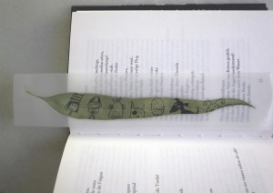

LeavesMarcador de libro / Bookmark / LesezeichenOctober 19, 2010 You can make a bookmark out of a eucalyptus leaf. At the same time it can be a message.Tags: present← Leafcrown / Blätterkrone / Corona de hojas Pulpo / Octopus / Krake →
AutumnJuego de viento / Wind chimes / WindspielHannah made her own design. Leafs of autumn with moon holes. They are moving with the wind.Read more →